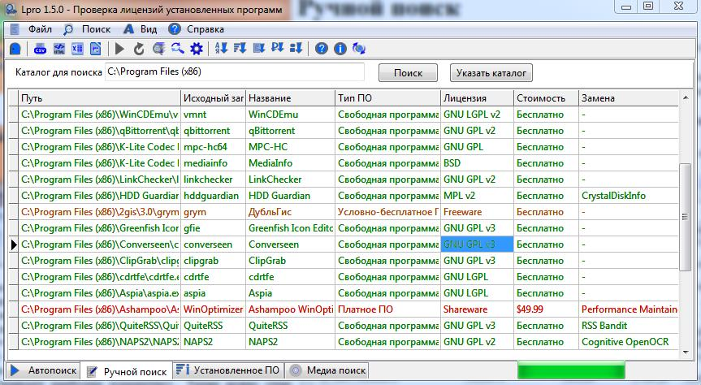

Ручной поиск
Автоматический поиск не может найти программы, записи о которых
отсутствуют в реестре Windows. Например, при использовании портативных
версий программ. Ручной поиск позволяет указать каталог с программами
для поиска.
Стоит отметить, что из-за механизмов работы будут присутствовать ложные
обнаружения. В будущем, ручной поиск будет переработан. В частности,
будет отображаться исходный файл, на основании которого и был сделан
вывод об установке конкретного ПО.
Программа ищет в указанном каталоге все исполняемые файлы и запрашивает
их имена в базе данных. Найденные совпадения отображаются в таблице.
Для того, чтобы воспользоваться функцией ручного поиска необходимо
открыть вкладку "Ручной поиск" со значком .
